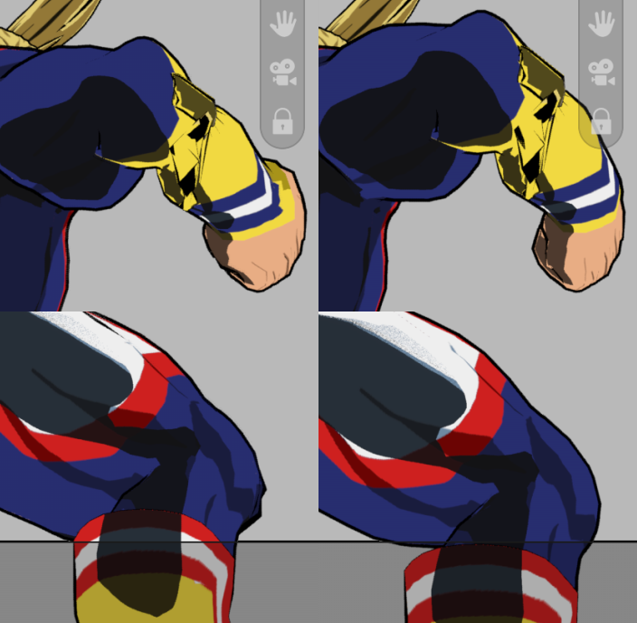
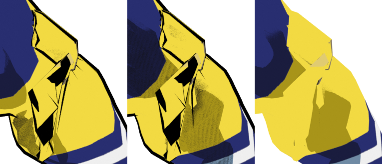

Frame 158 in Subject Size. The real near plane had overridden the authored projection on the forearm and knee even while their blended projection depth exceeded 0.54 m. Schema 41 computes the intended projection first and then places each point on that ray. A locally reciprocal depth continuation preserves ordering where neighboring triangles cross the eye.


The native test used the same upstream vertex coordinates, with a maximum measured difference of zero, and a 240.65 mm camera matched to the forearm's falloff in this pose. The character file was never saved by this test.